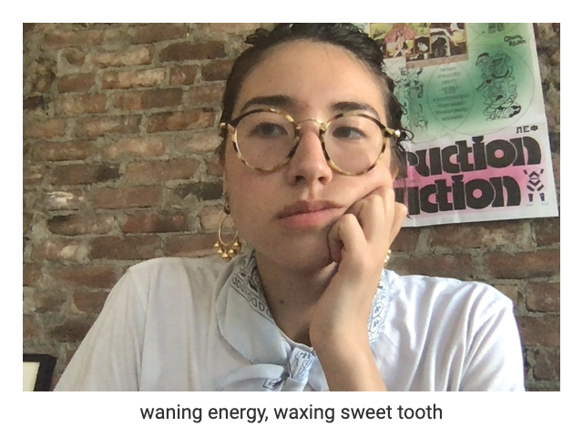

In quarantine, screen time has assumed new meaning.

While it used to be primarily attached to my daily rituals including work, art-making, and yes, my insatiable craving for distraction, the past few months have forced my computer and by extension my screen to become the default destination for activities that I once thought necessitated a physical, communal space: game nights, dance parties, workshops, passover seders, and even the classic quick catch up over coffee. All of these bespoke happenings now pseudo occur within the same confines of my New York apartment as I sit hunched over the kitchen table with my eyes drinking in my laptop's blue light.
Opening my computer simultaneously feels like an escape and a trap. I scroll, click, and type with newfound desperation, anxious for updates, connection, knowledge, and entertainment. It's harder than ever to spend time away from my screen when it feels like the only place I can really go. For this reason, any interruption to nudge me toward introspection feels especially welcome.
I built Glance Back over a year ago as a tool for myself to capture the many hours I spend hypnotized, staring deep into the eyes of the internet. It's a method of documentation but also a practice of confrontation. I force myself to look at my reflection and consider what's *really* on my mind. By encasing this question within the framework of this tool, I hoped it would become an act of genuine personal contemplation rather than a starter prompt to present my thoughts to hundreds of internet "friends".
If this extension is good for anything, I hope that especially during this indefinitely lasting moment it helps you stop and think about yourself, your screen, and the agency you hold in forming a relationship between the two.
Sending hearts and hugs to you as we all sit privately in our respective local storage,
(As I was writing this I thought of that joke and could not not include it, thanks,)
Maya <3

P.S. Here are some recent Glance Backs that I feel are emblematic of how I am currently spending my time. If you have any gems you'd like to share, send them to hello@mayaontheinter.net.